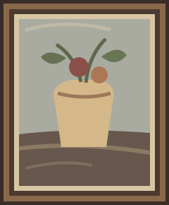

A different perspective
Some works disappear
without going anywhere.
Their story may simply have been forgotten.
The first question
What are we
really looking at?
A lead is a beginning, not an answer.
The possibility
The work hasn’t changed.
Our understanding might.
Discovery begins with a closer look.
Scroll to explore
An illustrative journey, not an identified artwork.